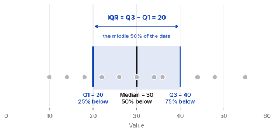
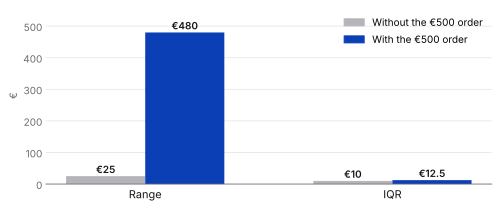
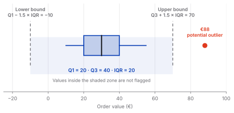
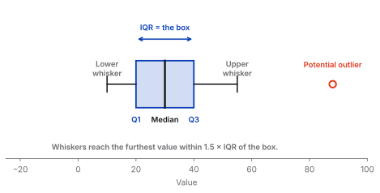
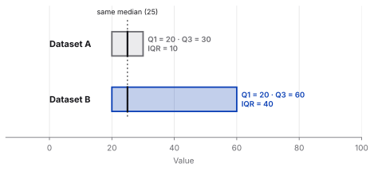
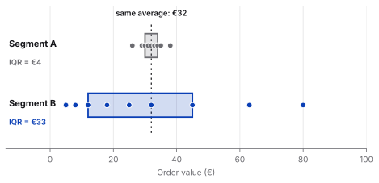

Statistics
IQR explained: the middle 50% of your data

When I first learned about the Interquartile Range (IQR), the formula looked simple:
IQR = Q3 − Q1
But the interesting part isn't the calculation. It's what IQR tells us about the data.
What is IQR?
The Interquartile Range measures the spread of the middle 50% of a dataset. To understand it, we first divide the data into four parts:
- Q1 (25th percentile) — 25% of the observations are below this value.
- Median (50th percentile) — half of the observations are below this value.
- Q3 (75th percentile) — 75% of the observations are below this value.
The distance between Q1 and Q3 is the IQR. So if Q1 is 20 and Q3 is 40:
IQR = 40 − 20 = 20
This means the middle 50% of the observations are spread across 20 units.

Why not just use the range?
The range is simply:
Range = Maximum − Minimum
It is easy to calculate, but there is a problem: outliers can completely change it. Imagine these customer order values:
€20 · €25 · €30 · €32 · €35 · €40 · €45 · €500
The €500 order dramatically increases the range. But the IQR focuses on the middle 50% of the data, making it much less sensitive to extreme values.

Good to know
There are several ways to calculate quartiles, so Excel, Python or R can return slightly different Q1 and Q3 values for small datasets. The numbers here use the linear-interpolation method (NumPy's default).
That's what makes IQR especially useful for skewed data and datasets with outliers.
IQR and outliers
One of the most common applications of IQR is identifying potential outliers. After calculating the IQR, we can create two boundaries:
Lower bound = Q1 − 1.5 × IQR
Upper bound = Q3 + 1.5 × IQR
Observations outside these boundaries are typically flagged as potential outliers. For example, with Q1 = 20 and Q3 = 40:
IQR = 40 − 20 = 20
Lower bound = 20 − 1.5 × 20 = −10
Upper bound = 40 + 1.5 × 20 = 70
Any observation above €70 or below −€10 would be flagged as a potential outlier. (Order values can't be negative, so in practice only the upper bound matters here.)

Important
An outlier is not automatically an error. It is simply an observation that deserves a closer look.
IQR in a box plot
This is also where IQR becomes visual. In a box plot, the box represents the middle 50% of the data. The bottom (or left side) of the box is Q1, the top (or right side) is Q3, and the distance between them is the IQR. The median sits inside the box, while observations beyond the whiskers may be displayed as potential outliers.

So when looking at a box plot, IQR gives us a quick way to understand how concentrated or spread out the central part of the distribution is.
What IQR tells us
A small IQR means the middle 50% of observations are relatively close together. A large IQR means they are more spread out. For example:
| Q1 | Q3 | IQR | |
|---|---|---|---|
| Dataset A | 20 | 30 | 10 |
| Dataset B | 20 | 60 | 40 |
Even though both datasets might have the same median, Dataset B has much greater variability in its middle 50%.

How to explain IQR to stakeholders
When presenting IQR to stakeholders, I would start with the business question:
How much do our typical values vary?
IQR helps answer this by looking at the middle 50% of the data. This makes it particularly useful when a dataset contains extreme values that could distort the overall picture.
For example, imagine we're analysing customer order values. A few customers might place unusually large orders, but those orders don't necessarily represent typical customer behaviour. Instead of letting these extreme values dominate the analysis, IQR helps us understand where the majority of typical orders are concentrated.
If the middle 50% of orders falls between €20 and €45, we can say that the typical range of order values is relatively concentrated around this interval.
Why does this matter?
Because an average alone can hide the story. Two customer segments could have the same average order value but very different distributions. One might have customers whose orders are consistently similar, while the other might contain a mixture of very small and very large orders.

IQR gives stakeholders another perspective:
Not just “What is the average?” but “How much variation is there among our typical observations?”
It can also help identify potential outliers that deserve further investigation. But an outlier isn't automatically a mistake. It could represent a VIP customer, a bulk purchase, a special promotion, or simply an unusual but legitimate event.
The takeaway
IQR is more than just a formula. Q1 → 25%, Median → 50%, Q3 → 75%, and IQR = Q3 − Q1. It describes the spread of the middle 50% of the data and provides a simple way to identify potential outliers. For me, that's the real value of IQR: it helps separate the typical pattern from the extreme values.